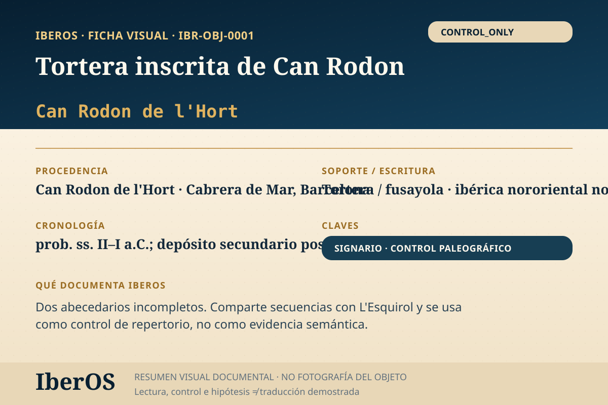

Ficha indexable · IBR-OBJ-0001
Tortera inscrita de Can Rodon
Dos abecedarios incompletos; texto 1 comparte kutukiŕbitatiko con L'Esquirol;...

Qué documenta IberOS
Dos abecedarios incompletos; texto 1 comparte kutukiŕbitatiko con L'Esquirol;...
Este objeto se publica como Control paleográfico / metodológico. No debe contarse como evidencia semántica independiente del corpus principal.
Cautela científica: una transliteración, segmentación o semejanza formal no equivale a una traducción demostrada de la lengua ibérica. IberOS mantiene separadas evidencia, interpretación, control y predicción.
Trazabilidad metodológica
Módulos activos: PALEO · TRACE · SIGNARY_DETECT · DUAL_LOCK.
Dependencia: INDEPENDENT_OR_UNRESOLVED.
Estado de entrada: NEEDS_SUBENTRY_SPLIT.
Subentradas documentales
Una única tortera física está enlazada a dos entradas de índice. Se mantienen como subentradas del mismo soporte.
| Subentrada IberOS | ID externo | Unidad |
|---|---|---|
IBR-OBJ-0001-A | I03095 | Cabrera a |
IBR-OBJ-0001-B | I03096 | Cabrera b |
Estado: Pendiente: cotejo signo a signo; las dos entradas no constituyen evidencias independientes.
Fuente y bibliografía de referencia
Fuente principal registrada: https://doi.org/10.1387/veleia.13345
Archivo de trabajo IberOS: IberOS_CaseStudies_Control_IBR-OBJ-0001_CanRodon_v1.0.pdf.